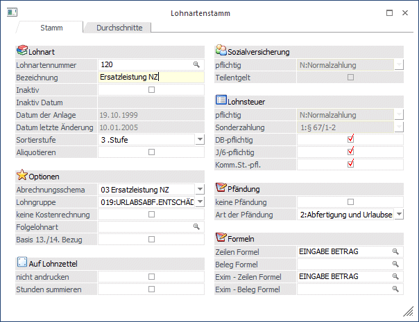
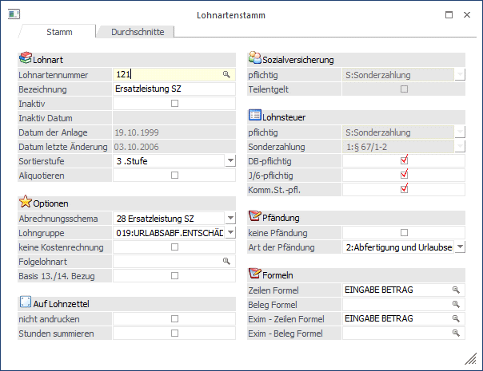
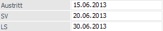
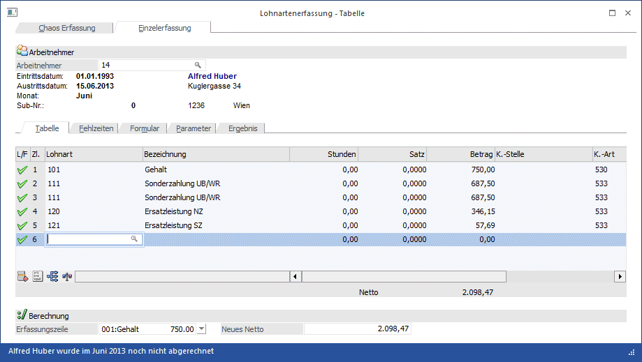
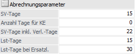
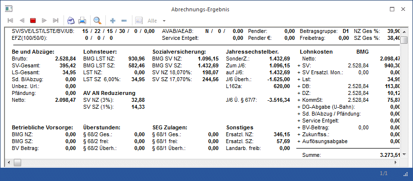
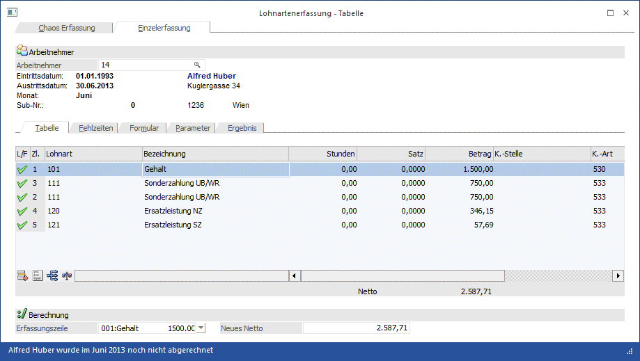
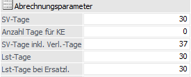
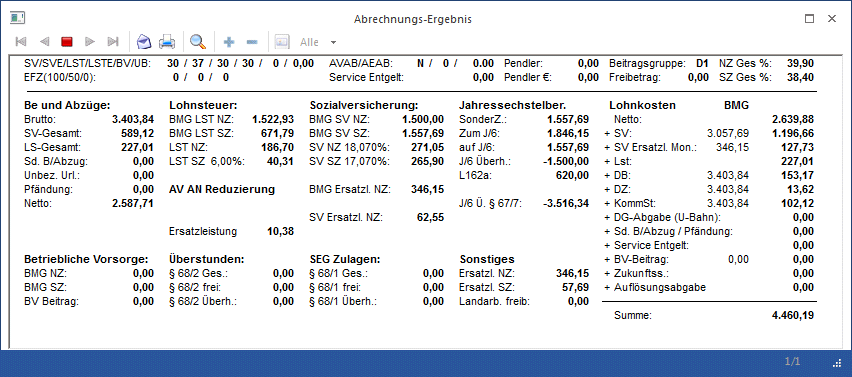

Seit dem 1.1.2001 gilt:
Ersatzleistungen (Urlaubsentschädigungen, Urlaubsabfindungen sowie freiwillige Abfertigungen oder Abfindungen für diese Ansprüche) für nicht verbrauchten Urlaub sind, soweit sie laufenden Arbeitslohn betreffen, als laufender Arbeitslohn, soweit sie sonstige Bezüge betreffen, als sonstiger Bezug im Kalendermonat der Zahlung zu erfassen.
Das bedeutet: Wenn ein Arbeitnehmer ausscheidet und noch Bezüge für nicht konsumierten Urlaub erhält, müssen diese Bezüge mit der laufenden Abrechnung mit abgerechnet werden.
Dabei muss aber trotzdem die Verlängerung der Pflichtversicherung berücksichtigt werden. Außerdem wird bei einer Ersatzleistung das J/6 nach dem Schema
"Summe der Bezüge" durch "Anzahl gearbeiteter Tage" * 60
gerechnet.
Vorgangsweise:
Ø 1.) Richtige Anlage der Lohnarten
Für die Abrechnung einer Ersatzleistung werden 2 Lohnarten benötigt:
ü Ersatzleistung NZ-Anteil
Diese
Lohnart ist wie ein normaler Bezug anzulegen: SV-NZ mit allen Pflichtigkeiten,
LST-NZ mit DB-, KommSt- und J/6-Pflichtigkeit. Besonderheit dabei: Es muss das
Abrechnungsschema "3 - Ersatzleistung NZ" verwendet werden, damit das J/6
richtig berechnet werden kann.

ü Ersatzleistung SZ-Anteil
Diese
Lohnart wird wie eine "normale" Sonderzahlung angelegt:
SV-SZ mit allen
Pflichtigkeiten, LST-SZ nach § 67 1-2, mit DB-, KommSt- und J/6-Prüfung. Als
Abrechnungsschema wir "28 Ersatzleistung SZ" genommen. Damit kann dann bestimmt
werden, welcher Anteil von Sonderzahlungen zu den Ersatzleistungen
dazugehört.

Ø 2.) Arbeitnehmer-Stamm
Im Arbeitnehmerstamm muss ein Austrittsdatum hinterlegt werden, wobei zuerst das "richtige" Austrittsdatum (Datum des letzten Arbeitstages) eingegeben wird. Danach gibt es zwei weitere Felder:
SV: Hier wird das Datum eingetragen, an dem die Pflichtversicherung endet (inkl. Ersatzleistungstage).
LS: Wenn Ersatzleistungen ausbezahlt werden, dann ist das lohnsteuerrechtliche Austrittsdatum immer der letzte des Austrittsmonats.
Beispiel:
a.) Der AN tritt am 15. Juni aus und bekommt Ersatzleistungen für 5 Urlaubstage.
Austritt = 15. Juni ergibt 15 SV-Tage
SV = 20. Juni ergibt 20 SV-Tage inkl. Verlängerungstage
LS = 30. Juni ergibt 15 LST-Tage und 30 LS-Tage bei Ersatzleistungen
b.) Der AN tritt am 15. Juni aus und bekommt Ersatzleistungen für 30 Urlaubstage.
Austritt = 15. Juni ergibt 15 SV-Tage
SV = 15. Juli ergibt 45 SV-Tage inkl. Verlängerungstage
LS = 30. Juni ergibt 15 LST-Tage und 30 LS-Tage bei Ersatzleistungen

Ø 3.) Abrechnung
In der Abrechnung müssen nur die Lohnarten mit den richtigen Beträgen eingetragen werden. Dazu kommt dann noch, dass in den Abrechnungsparametern die richtigen Werte hinterlegt werden. Hier sind speziell die Felder
ü SV-Tage
Eingabe der SV-Tage für
die "normale" Abrechnung. Dieser Wert wird für eine ggf. notwendige
Aliquotierung des Normalbezuges verwendet.
ü SV-Tage inkl.
Verlängerungstage
Eingabe der SV-Tage inkl. der Ersatzleistungstage. Dieser
Wert wird für die Berechnung der Höchstbemessungsgrundlage verwendet.
ü LSt-Tage
Hier werden die
Lohnsteuertage eingetragen, die für die "normale" Abrechnung gelten. Bei
Ersatzleistungen werden diese Tage nur für die Berechnung des J/6 verwendet.
ü LSt-Tage bei
Ersatzleistung
Hier werden die Lohnsteuertage eingetragen, mit den dann
effektiv die Lohnsteuer berechnet wird. Bei Auszahlung einer Ersatzleistung muss
hier immer 30 (monatlicher Lohnsteuerzeitraum) hinterlegt sein.
von Bedeutung, die aber - sofern die Werte im AN-Stamm richtig hinterlegt wurden - automatisch vorgeschlagen werden.
Ø 4.) Beispiel 1 (alle Beträge beziehen sich auf eine Abrechnung im Jahr 2013)
Der AN 14 - Herr Alfred Huber tritt mit 15. Juni 2013 aus. Er hat einen laufenden Normal-Bezug von 1.500,- und erhält noch Ersatzleistungen für 6 Werktage (+ 1 SZ-Tag). Es wurden noch keine Sonderzahlungen ausbezahlt.
Lösung
Zuerst müssen die Werte für die Abrechnung ermittelt werden:
Ø Gehalt:
Da nur 15 Tage gearbeitet wurden, steht auch nur das halbe Gehalt zu - also 750,-.
Ø UB / WR:
Hier erfolgt jeweils die Berechnung
"Grundbezug" durch 12 * "Anzahl gearbeiteter Monate"
1.500 / 12 * 5,5 = 687,50
Ø Ersatzleistung NZ:
Die Berechnung der Ersatzleistung erfolgt nach der Formel: Grundbezug / 26 * Werktage
1500 / 26 * 6 = 346,15
Ø Ersatzleistung SZ:
Da für 6 Werktage noch ein Sonderzahlungstag hinzukommt, wird vom errechneten NZ-Anteil nochmals ein Sechstel berechnet.
346,15 / 6 = 57,69
Das ergibt für die Lohnverrechnung folgende Lohnarten:
|
Lohnart |
Bezeichnung |
Betrag |
|
101 |
Gehalt |
750,- |
|
111 |
UB |
687,50 |
|
111 |
WR |
687,50 |
|
120 |
Ersatzleistung NZ |
346,15 |
|
121 |
Ersatzleistung SZ |
57,69 |
Im WinLine LOHN sieht das folgendermaßen aus:

Ø Parameter
Für die richtige Abrechnung müssen noch die Parameter geprüft werden:
ü SV-Tage
Diese müssen auf 15
Tage stehen, weil nur das halbe Monat gearbeitet wurde.
ü SV-Tage inkl.
Verlängerungstage
Diese müssen auf 22 Tage stehen, weil für 7 Tage
Ersatzleistungen gezahlt wurden.
ü LSt-Tage
Diese müssen auf 15
stehen, weil nur das halbe Monat gearbeitet wurde. Diese 15 Tage werden auch zur
Ermittlung des J/6 verwendet.
ü LSt-Tage bei
Ersatzleistungen
Stehen immer auf 30 (wenn Ersatzleistungen abgerechnet
werden).

Abrechnung
Nachfolgen wird das Abrechnungsergebnis gezeigt. Dabei werden für die wichtigsten Werte die Berechnungsmethoden dargestellt:

Ø Bemessungsgrundlage SV NZ
Hier werden nur die Normalzahlungsanteile hinein gerechnet, also der Gehalt und die Ersatzleistung NZ. In unserem Beispiel bedeutet das:
Gehalt = 750,-
Ersatzleistung NZ = 346,15
BMG SV NZ = 750 + 346,15 = 1096,15
Davon werden dann die 18,07 % SV NZ gerechnet = 198,07
Davon wird dann noch die AV-Reduzierung abgezogen (3 % von 1.096,15) = 32,88
Ø Bemessungsgrundlage SV SZ
Hier werden die Sonderzahlungsanteile hinein gerechnet, also die anteiligen Sonderzahlungen und die Ersatzleistung SZ.
UB = 687,50
WR = 687,50
Ersatzleistung SZ = 57,69
BMG SV SZ = 687,50 + 687,50 + 57,69 = 1432,69
Davon werden dann die 17,07 % SV SZ gerechnet = 244,56
Davon wird dann noch die AV-Reduzierung abgezogen (1 % von 1432,69) = 14,33
Ø Jahressechstelberechnung:
Bei Ersatzleistungen wird das Jahressechstel nach der Formel ((Summe der Bezüge / Abgerechnete Lohnsteuertage bis Austritt * 60) + 1/6 Ersatzleistung NZ) - also Taggenau - berechnet.
In unserem Beispiel bedeutet das:
Summe der Bezüge = 5 * 1.500,- + 750,- = 8.250,-
Lohnsteuertage Jahresanfang - Austritt = 1.1. bis 15.6. = 165 Tage
1/6 Ersatzleistung NZ = 346,15 / 6 = 57,69
Jahressechstel: (8250 / 165 * 60) + 57,69 = 3057,69
Ø Lohnsteuer Sonderzahlung
Für die Berechnung der Lohnsteuer Sonderzahlung werden alle Bezüge, die nach § 67 1-2 abgerechnet werden können, zusammengezählt. Dann wird geprüft, ob die Bezüge noch in das J/6 passen. Dann wird vom Betrag, der noch in das J/6 passt, die darauf entfallene SV SZ abgezogen. Dann wird geprüft, ob der Freibetrag von 620,- bereits ausgeschöpft wurde. Der Rest wird dann mit 6 % versteuert.
In unserem Beispiel bedeutet das:
Summe der Sonderzahlung nach § 67 1-2 = UB, WR und Ersatzleistung SZ = 687,50 + 687,50 + 57,69 = 1432,69.
Prüfung auf das J/6: Das J/6 beträgt 3057,69. Es wurden noch keine Sonderzahlungen bezahlt - daher kann die gesamte Sonderzahlung steuerbegünstigt abgerechnet werden.
Darauf entfallene SV = 1462,69 * 17,00 / 100 = 243,56
Prüfung auf den Freibetrag: Bisher wurden noch keine Sonderzahlungen ausgezahlt, und das Jahressechstel ist größer als 2.100,-, also hat der AN Anspruch auf einen Freibetrag von 620,- der von der BMG LST SZ abgezogen wird.
BMG LST SZ = Summe Sonderzahlung - darauf entfallene SV - Freibetrag = 1432,69 - 244,56 - 620 = 568,13
LST SZ = BMG LST SZ * 6 / 100 = 568,13 * 6 / 100 = 34,09.
Ø Lohnsteuer Normalzahlung
Für die Berechnung der LST NZ werden die Normalbezüge zusammengerechnet, dann die darauf entfallene SV abgezogen. Dann wird noch die Pendlerpauschale und der Freibetrag (sofern vorhanden) abgezogen. Das Ergebnis wird nach der Monatstabelle (nicht nach der Tagestabelle) versteuert.
In unserem Beispiel bedeutet das:
Summe der Normalzahlungen: = Gehalt + Ersatzleistung NZ = 750 + 346,15 = 1096,15.
Darauf entfallene SV = 1096,15 * 18,07 / 100 = 198,07, abzüglich der AV-Reduzierung von 32,88 = 165,19
BMG LST NZ = Normalzahlung - SV - Pendlerpauschale - Freibetrag = 1096,15 - 165,19 - 0 - 0 = 930,96.
In der monatlichen Lohnsteuertabelle ergibt das eine LST NZ von 0,-.
Bei diesem Beispiel gibt es weiter keine Besonderheiten. Die Auszahlung des gesamten Betrages sowie die Abrechnung und Zahlung der SV-Beiträge erfolgt im gleichen Monat.
Das L16 für diesen AN muss bis zum 31. Juli 2010 ausgestellt werden.
Ø 4.) Beispiel 2 (alle Beträge beziehen sich auf eine Abrechnung im Jahr 2013)
Der AN 14 - Herr Alfred Huber tritt mit 30. Juni 2013 aus. Er hat einen laufenden Normal-Bezug von 1.500,- und erhält noch Ersatzleistungen für 6 Werktage (+ 1 SZ-Tag). Es wurden noch keine Sonderzahlungen ausbezahlt.
Lösung
Zuerst müssen die Werte für die Abrechnung ermittelt werden:
Ø Gehalt:
Da noch das ganze Monat gearbeitet wurde, steht auch der gesamte Monatsbezug zu - also 1.500,-.
Ø UB / WR:
Hier erfolgt jeweils die Berechnung
"Grundbezug" durch 12 * "Anzahl gearbeiteter Monate"
1.500 / 12 * 6 = 750,-
Ø Ersatzleistung NZ:
Die Berechnung der Ersatzleistung erfolgt nach der Formel: Grundbezug / 26 * Werktage
1500 / 26 * 6 = 346,15
Ø Ersatzleistung SZ:
Da für 6 Werktage noch ein Sonderzahlungstag hinzukommt, wird vom errechneten NZ-Anteil nochmals ein Sechstel berechnet.
346,15 / 6 = 57,69
Das ergibt für die Lohnverrechnung folgende Lohnarten:
|
Lohnart |
Bezeichnung |
Betrag |
|
101 |
Gehalt |
1500,- |
|
111 |
UB |
750,- |
|
111 |
WR |
750,- |
|
120 |
Ersatzleistung NZ |
346,15 |
|
121 |
Ersatzleistung SZ |
57,69 |
Im WinLine LOHN sieht das folgendermaßen aus:

Ø Parameter
Für die richtige Abrechnung müssen noch die Parameter geprüft werden:
ü SV-Tage
Diese müssen auf 30
Tage stehen, weil auch das ganze Monat gearbeitet wurde.
ü SV-Tage inkl.
Verlängerungstage
Diese müssen auf 37 Tage stehen, weil für 7 Tage
Ersatzleistungen gezahlt wurden.
ü LSt-Tage
Diese müssen auf 30
stehen, weil das ganze Monat gearbeitet wurde.
ü LSt-Tage bei
Ersatzleistungen
Stehen immer auf 30 (wenn Ersatzleistungen abgerechnet
werden).

Abrechnung
Nachfolgen wird das Abrechnungsergebnis gezeigt. Dabei werden für die wichtigsten Werte die Berechnungsmethoden dargestellt:

Ø Bemessungsgrundlage SV NZ
Hier werden nur die Normalzahlungsanteile hinein gerechnet, also der Gehalt und die Ersatzleistung NZ - sofern sie in das Monat der Abrechnung hineinfallen. In unserem Beispiel bedeutet das:
Gehalt = 1500,-
BMG SV NZ = 1500
Davon werden dann die 18,07 % SV NZ gerechnet = 271,05
Ø Bemessungsgrundlage Ersatzleistung NZ
Da die Ersatzleistung über das Monatsende hinausgeht, wird diese in einer eigenen Rubrik angezeigt
Ersatzleistung NZ = 346,15
BMG Ersatzl. NZ = 346,15
Davon werden dann die 18,07 % SV NZ gerechnet = 62,55
Davon wird dann noch die AV-Reduzierung abgezogen (3 % von 346,15) = 10,39
Ø Bemessungsgrundlage SV SZ
Hier werden die Sonderzahlungsanteile hinein gerechnet, also die anteiligen Sonderzahlungen und die Ersatzleistung SZ, sofern sie in das Monat der Abrechnung hineinfallen.
UB = 750,-
WR = 750,-
BMG SV SZ = 750,- + 750,- = 1500,-
Davon werden dann die 17,07 % SV SZ gerechnet = 256,05
Ø Bemessungsgrundlage Ersatzleistung SZ
Da die Ersatzleistung über das Monatsende hinausgeht, wird diese in einer eigenen Rubrik angezeigt
Ersatzleistung SZ = 57,69
BMG Ersatzl. SZ = 57,69
Davon werden dann die 17,07 % SV SZ gerechnet = 9,85
Ø Jahressechstelberechnung:
Bei Ersatzleistungen wird das Jahressechstel nach der Formel ((Summe der Bezüge / Abgerechnete Lohnsteuertage bis Austritt * 60) + 1/6 Ersatzleistung NZ) - also Taggenau - berechnet.
In unserem Beispiel bedeutet das:
Summe der Bezüge = 6 * 1.500,- = 9.000,-
Lohnsteuertage Jahresanfang - Austritt = 1.1. bis 30.6. = 181 Tage
1/6 Ersatzleistung NZ = 346,15 / 6 = 57,69
Jahressechstel: (9000 / 181 * 60) + 57,69 = 3041,12
Ø Lohnsteuer Sonderzahlung
Für die Berechnung der Lohnsteuer Sonderzahlung werden alle Bezüge, die nach § 67 1-2 abgerechnet werden können, zusammengezählt. Dann wird geprüft, ob die Bezüge noch in das J/6 passen. Dann wird vom Betrag, der noch in das J/6 passt, die darauf entfallene SV SZ abgezogen. Dann wird geprüft, ob der Freibetrag von 620,- bereits ausgeschöpft wurde. Der Rest wird dann mit 6 % versteuert.
In unserem Beispiel bedeutet das:
Summe der Sonderzahlung nach § 67 1-2 = UB, WR und Ersatzleistung SZ = 750,- + 750,- + 57,69 = 1557,69.
Prüfung auf das J/6: Das J/6 beträgt 3041,12. Es wurden noch keine Sonderzahlungen bezahlt - daher kann die gesamte Sonderzahlung steuerbegünstigt abgerechnet werden.
Darauf entfallene SV = 1557,69 * 17,07 / 100 = 265,90
Prüfung auf den Freibetrag: Bisher wurden noch keine Sonderzahlungen ausgezahlt, und das Jahressechstel ist größer als 2.100,-, also hat der AN Anspruch auf einen Freibetrag von 620,- der von der BMG LST SZ abgezogen wird.
BMG LST SZ = Summe Sonderzahlung - darauf entfallene SV - Freibetrag = 1557,69 - 265,90 - 620 = 671,79
LST SZ = BMG LST SZ * 6 / 100 = 671,79 * 6 / 100 = 40,31.
Ø Lohnsteuer Normalzahlung
Für die Berechnung der LST NZ werden die Normalbezüge zusammengerechnet, dann die darauf entfallene SV abgezogen. Dann wird noch die Pendlerpauschale und der Freibetrag (sofern vorhanden) abgezogen. Das Ergebnis wird nach der Monatstabelle (nicht nach der Tagestabelle) versteuert.
In unserem Beispiel bedeutet das:
Summe der Normalzahlungen: = Gehalt + Ersatzleistung NZ = 1500 + 346,15 = 1846,15.
Darauf entfallene SV = 1846,15 * 18,07 / 100 = 333,60 abzüglich AV-Reduzierung von 10,38 = 323,22
BMG LST NZ = Normalzahlung - SV - Pendlerpauschale - Freibetrag = 1846,15 - 323,22 - 0 - 0 = 1522,93.
In der monatlichen Lohnsteuertabelle ergibt das eine LST NZ von 186,70.
Besondere Hinweise bei Ersatzleistungen, die über das Monatsende hinausgehen:
1.) Im Auszahlungsfenster wird der korrekte Betrag (unter Berücksichtigung der SV für nachfolgende Monate) ausgewiesen.
2.) Auf der Nettoliste wird der Betrag unter Berücksichtigung der SV für die nachfolgenden Monaten ausgewiesen (== gleicher Betrag wie am Abrechnungsbeleg).
3.) Am Lohnjournal werden nur die Werte ausgewiesen, die auch in diesem Monat anfallen.
4. ) Auch am SV-Beleg werden nur die Werte ausgewiesen, die auch in diesem Monat anfallen.
5.) Am FIBU-Beleg wird in der Position "Netto Auszahlung" der Betrag ausgewiesen, der auch ausgezahlt wird. Allerdings ist dieser Betrag nicht der, der dann in weiterer Folge gebucht wird, sondern da wird wieder der Betrag ohne Berücksichtigung der SV für die nachfolgenden Monaten ausgewiesen (höherer Betrag, als am Abrechnungsbeleg). Im nachfolgenden Monat wird dieser Wert dann wieder entsprechend verringert. Dafür gibt es am FIBU-Beleg eine eigene Position "Netto Auszahlung SV Ersatzleistung für Folgemonate", in der die SV ausgewiesen wird, die in das nächste Monat hinein gerechnet wird.
6.) Am Jahreslohnkonto / Betriebssummenblatt werden die SV-Werte in den Perioden angezeigt, in denen sie anfallen. Dort wird auch der negative Netto- / Auszahlungsbetrag ausgewiesen. Für Perioden, in denen nur Ersatzleistungen abgerechnet wurden, kann kein Abrechnungsbeleg ausgegeben werden, da es sich dabei um eine fiktive Abrechnung handelt und die Werte in der Austrittsperiode abgerechnet wurden.
7.) In der SV-Verprobung werden die Beiträge ebenfalls in der Periode angezeigt, in der sie angefallen sind.
8.) In den AN-Kosten werden auch nur die Kosten angezeigt, die in der entsprechenden Periode angefallen sind. Ersatzleistungen, die erst für das nächste Monat abgerechnet wurden, werden auch in dieser Periode ausgewiesen.
9.) Am L16 werden alle Bezüge entsprechend der Abrechnung kumuliert. Geht die Ersatzleistung über das Jahr hinaus (z.B. Austritt per 31.12. und dann noch Ersatzleistungen), werden für die im nächsten Jahr abgerechneten Ersatzleistungen ein eigenes L16 erstellt, wo dann nur die entsprechenden SV-Werte angeführt werden.
10.) Bei der KORE-Übergabe werden die SV-Werte auch in den Monaten gebucht, wo sie anfallen. Im Normalfall werden davon nur die SV-DG betroffen sein, die dann in nachfolgenden Monaten gebucht wird.
11.) Änderungen für eine Austrittsabrechnung können nur über die Rollung durchgeführt werden. Dabei ist zu beachten, dass ggf. anfallende Nachzahlungen manuell zu behandeln sind.